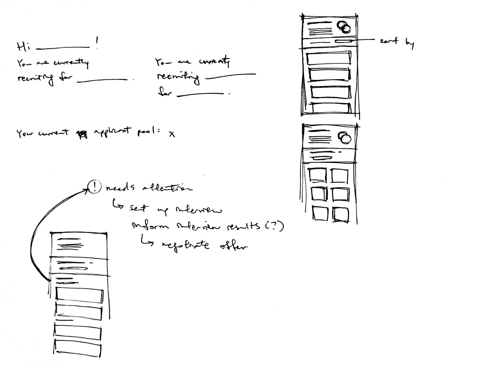
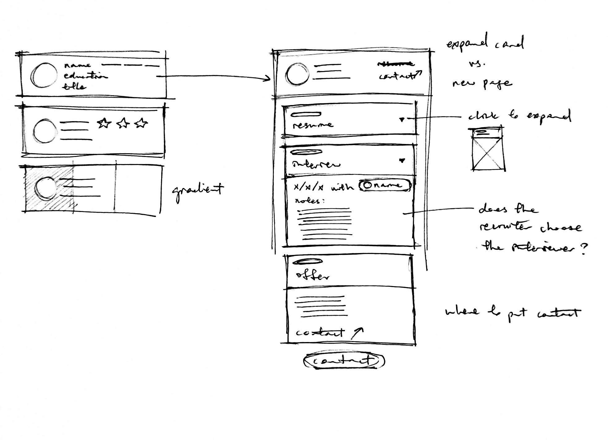
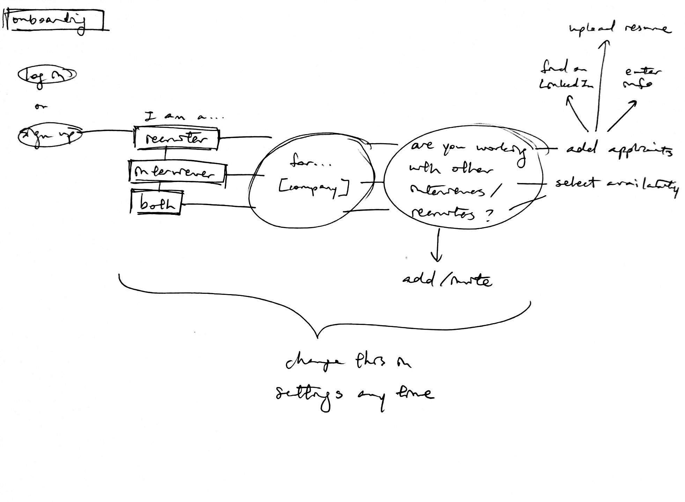
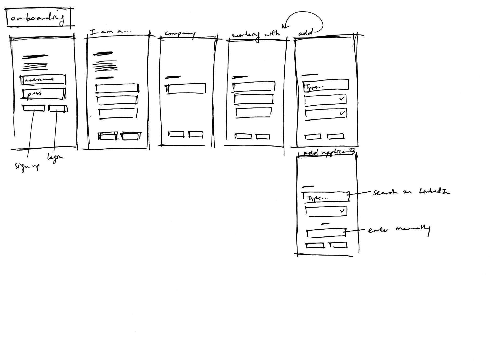
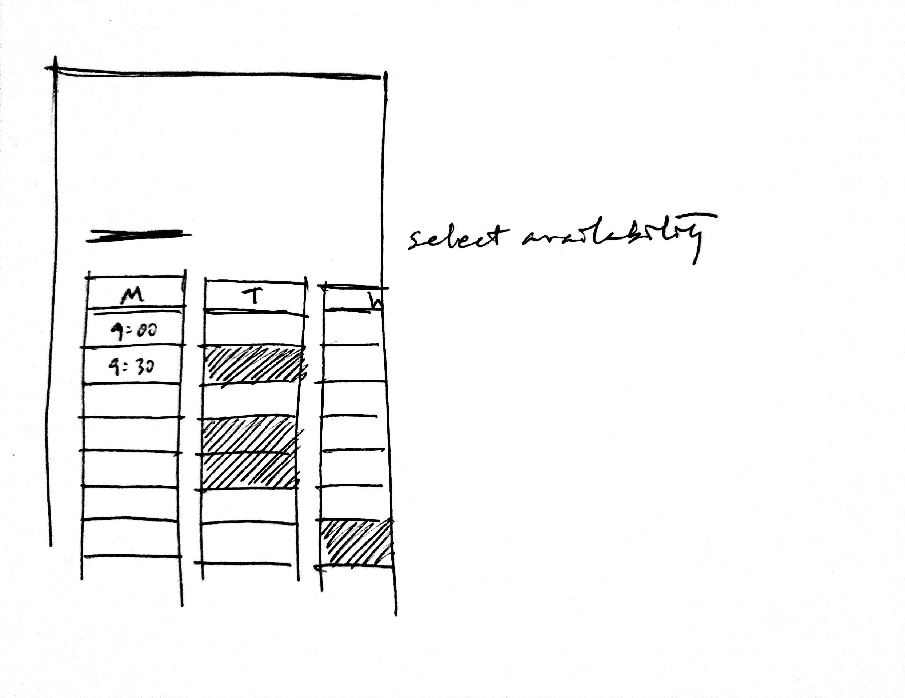
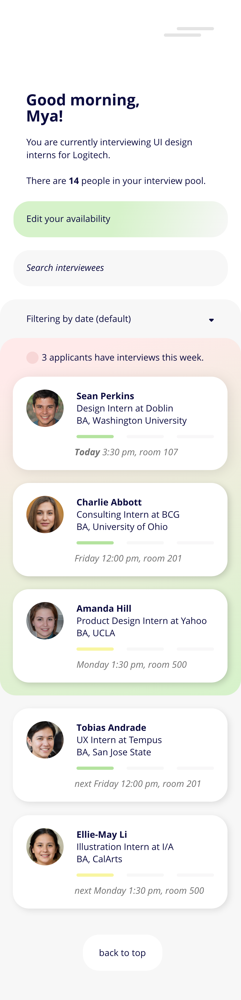
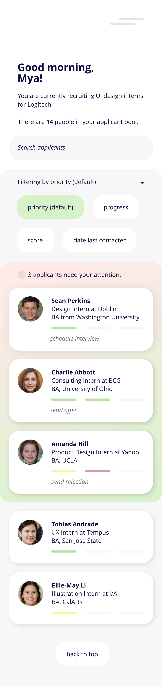
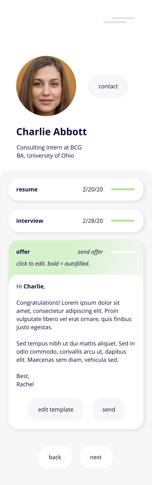

24-hour design challenge — job applicant tracker for recruiters
Adobe XD
A design challenge I received focusing on tracking applicants' progress in the hiring process. Design for two users and their respective needs: recruiters and interviewers. Decide which platform is most suitable (web, iOS, Android).
—
Debriefing
user flow
platform
sketching


Wireframing
user flow pt 2



Wireframing pt 2
high-fi



future steps